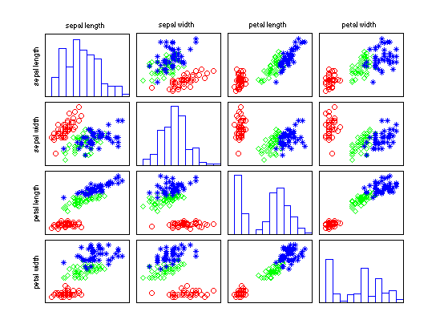

Fisher Iris Data Visualization Demo
%PMTKneedsStatsToolbox boxplot
% This file is from pmtk3.googlecode.com requireStatsToolbox [X,y,classnames,varnames] = fisheririsLoad; figure(); %pscatter(X,'y', y); %suptitle(sprintf('iris data, red=setosa, green=versicolor, blue=virginica')); pscatter(X, 'y', y, 'vnames', {'sepal length', 'sepal width', 'petal length', 'petal width'}); printPmtkFigure fisherIrisPairs %{ figure(); for dim=1:4 subplot(2,2,dim) if dim<=2 boxplot(X(:,dim), y, 'notch', 'off'); else boxplot(X(:,dim), y, 'notch', 'on'); end set(gca,'xticklabel',classnames); xlabel(''); ylabel(''); title(sprintf('%s', varnames{dim})) end printPmtkFigure irisBoxNotch %}
plotsymbol =
'ro' 'gd' 'b*' 'k+'
